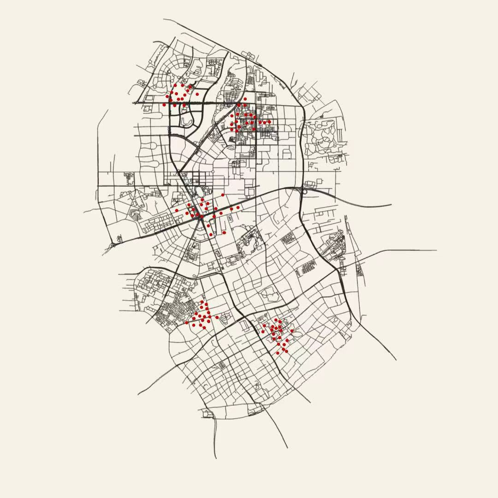
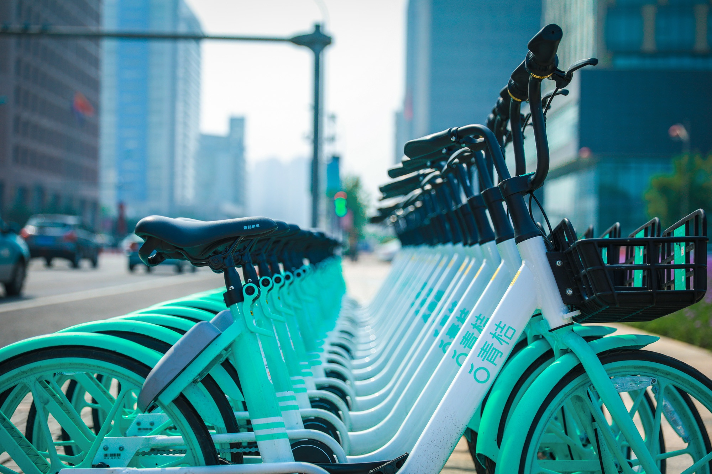
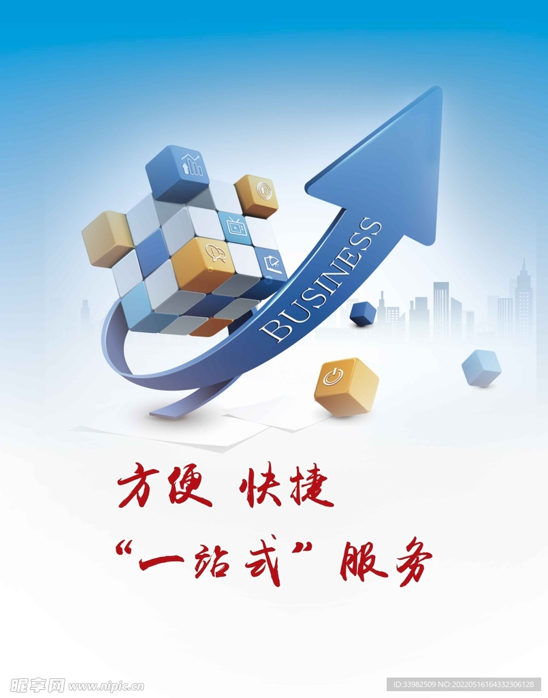
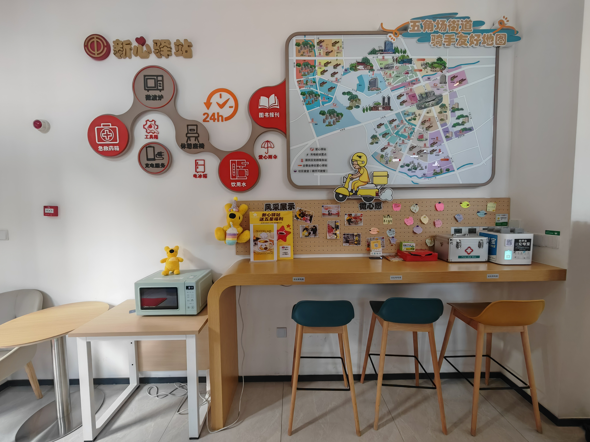
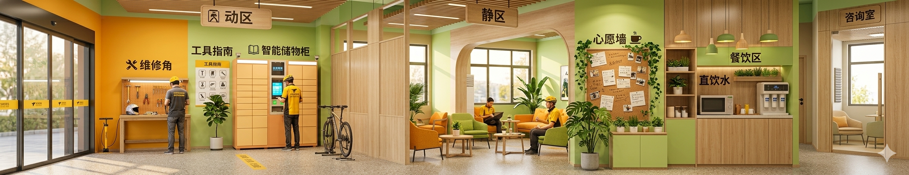
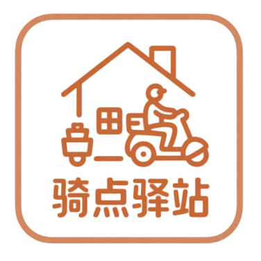
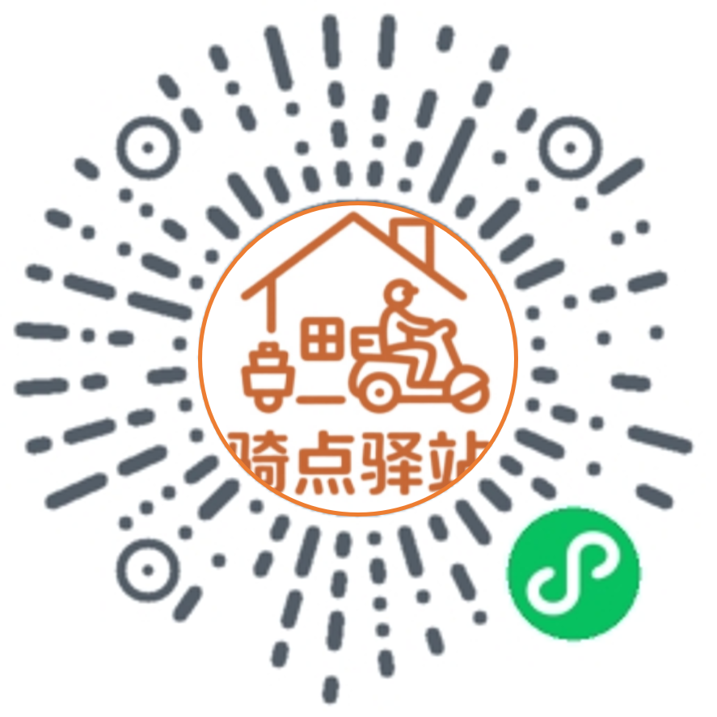

驿站内部全景展示
方案设计：动静分区布局。外侧为繁忙区（补给），内侧为静区（休息）。
驿站"3+1"联动模式
政府
政府的场地支撑是整个驿站的底座。在调研中我们发现，虽然市场上有很多商业门面，但租金成本往往是共享经济项目最大的负担。而政府手里拥有大量贴近社区、位置极佳的公共场地，比如分布在杨浦区各个街镇的党群服务中心或社区便民点。通过与街道和民政部门对接，我们希望将这些闲置或利用率不高的存量资源盘活，改造成骑手们触手可及的落脚点。这种政府出场地、社会力量出运营的合作方式，不仅解决了驿站的租金问题，更让公益项目有了官方的背书。对政府来说，这是一种创新的基层治理尝试，把“新就业形态劳动者”的服务保障落到了实处，真正体现了人民城市为人民的理念。

杨浦区骑手驿站分布（拟）
点击地图上的呼吸点，查看各驿站简介

* 呼吸点位置为示意，实际部署需配合精确地图
未选择驿站站点
请点击地图上的呼吸点，查看该驿站基本信息。
项目优势
科技赋能
驿站小程序、算法选址、3D打印模型

政策引领
践行人民城市理念、建设“骑手友好社区”

顺应时代发展趋势
数字经济、共享经济理念

创新服务体验
“公益+微利”运营模式、“一站式”综合服务
驿站“1+4”服务模块
核心基础模块
在我们的设计中，物理空间的舒适度是第一位的。驿站提供24小时开放的休息室，内部配备了可供骑手使用的微波炉、大容量冰箱、自动饮水机和WIFI。对于在马路边赶时间的骑手来说，能有一个可以热饭、充电等功能的地方，就是最大的方便。此外，我们特别设立了能量补给站，这里有免费的冷热饮用水，并安置了自动售货机，以平价销售功能性饮料和补充体能的零食。考虑到骑手工作的特殊性，我们还配备了包含藿香正气水、碘伏、创可贴等在内的应急箱。智能寄存区则解决了骑手随身物资的安放难题，这能有效避免雨天物资潮湿和丢失的困扰。这套基础服务逻辑，旨在消除骑手在城市穿行中的焦虑感，让他们推开门就能感受到安稳。

“公益+微利”运营模式
利用驿站的公益属性，本项目可以积极争取来自基层政府端（如各街道的党群服务中心）中的闲置资源支持，尽可能为更多的骑手提供服务。
保障驿站的常态化可持续公益服务，通过少量的、合理的商业收益，建立起一套稳健的资金闭环。
驿站内部空间设计

动静分离的功能布局
驿站采用“动静分离”布局。动区设于入口，配置维修角、工具指南及智能储物柜，地面防滑耐磨。静区位于内侧，以隔断划分，设沙发座椅、心愿墙及餐饮区，提供微波炉与直饮水。咨询室采用隔音设计，照明选用暖色调光源。
温馨明亮的装修风格
内部采用亮色调与自然材质，主色调选用橙黄与果绿，家具搭配布艺软包，空间内点缀绿植，标识系统图文统一、指示清晰。
智能便捷的设备配置
驿站内部配置兼顾基础与增值服务。空调、冰箱与微波炉满足餐食储热需求。全空间免费Wi-Fi保障接单与休息。智能门锁支持人脸识别或刷卡便捷进入。急救箱配置常用药保障突发需求。休息区广布USB及五孔插座，满足充电需求。

品牌logo设计理念
品牌logo以驿站的房屋轮廓为背景，融合骑手骑行的动态剪影与能量补给元素，将“驿站庇护”的寓意与服务场景融为一体，直观传递品牌服务属性。
暖棕色调的简笔线条设计简约明了，既契合驿站的温暖定位，又凸显高效便捷的服务特质，实现了人文关怀与实用价值的有机融合。
联系我们 · 成为志愿者
无论是提供场地、捐赠物资，还是申请成为驿站站长，您的每一份力量都让这座城市更有温度。
